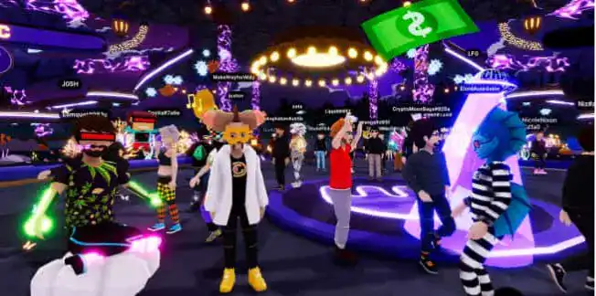

Le web 3.0 est une version décentralisée d’internet qui se base sur la blockchain, une technologie dont sont entourées les cryptomonnaies. Cette version succède aux précédentes versions web 1.0 et web 2.0.
Le web 3.0 assure la confidentialité et la sécurité sur nos données grâce à une identité numérique.
L'utilisateur peut donc contrôler ses données personnelles et participer au futur du web.
Ce concept a été crée en 2014 par Gavin Wood, créateur également de la cryptomonnaie « Ethereum »,
qui est aujourd’hui 2ème au classement après le Bitcoin.
Photo de Gawin Wood en 2017
Le web décentralisé correspond donc à la dernière génération d'applications et de services internet
qui fonctionnent avec la technologie des registres distribués de la blockchain.
Cette version du web devrait également accueillir la Metaverse, à la manière du film Ready Player One,
nous offrant un environnement 3D où l’on pourrait y avoir accès à l’aide de casque de réalité virtuelle,
les gens seraient amenés à interagir les uns avec les autres, avec des avatars, comme si c’était la vraie vie.
Ces avatars sont appelés NFT, un objet numérique, auquel est attaché une identité ayant au moins un propriétaire. Ces NFT ne sont procurable que par cryptomonnaie, donc ont un réel coût.
Image de la “Metaverse” actuelle
Les NFT les plus connus sont les Bored Apes Yacht Club (BAYC),
ce sont des dessins de singe avec des accoutrements différents qui se vendent plusieurs centaines de milliers d’euros.
La particularité de ces NFT, était qu’à leurs possession,
il nous était possible de participer à des évènements ou des soirées secrète sur des Yacht.
Impossible donc de venir avec une contrefaçon ou une capture d’écran, car la personne ayant le NFT,
est inscrit dans la blockchain et est le seul détenteur au monde de celui-ci.
De grandes star internationales en possèdent, par exemple Stephen Curry, joueur de NBA, ou même Freeze Corleone,
un rappeur français connu mondialement.
Quelques NFT BAYC
Un futur où internet est encore plus le centre du monde qu’auparavant,
un monde virtuel immersif à l’aide de casque réalité virtuel, une décentralisation totale d’internet.
En tant qu’étudiant en Métier Multimédia Internet, ce futur m’intéresse beaucoup,
ce qui m’a valu de vous partager cet article.